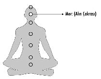

6- MOR – ALIN ÇAKRASI (FARKINDALIK):
Alın çakrası; iki kaşın ortasında, “üçüncü göz” olarak da tarif edilen bölgededir ve farkındalığın deneyimlendiği enerji merkezidir. Diğer adı üçüncü göz olan bu bölge, altıncı bölgedir ve altıncı his denilen içsel deneyimlerin merkezidir.
İnsanın kendi Spiritüel yolculuğu boyunca yine tamamen kendi emeği, çabası ve kat ettiği gelişim ivmesi oranında çalışan bu enerji merkezi, günümüzün popüler enerji hocalarının bu bölgeye ellerini koymalarıyla aktive edilmez.
Büyük paralar verip üçüncü gözlerini açtırdıklarını söyleyen ve bunun üzerine birtakım varlıklar görmeye başladıklarını iddia edenler yüksek oranda şizofrenidedirler. Vahim durumlarının farkında olmadıkları için inandıkları sanrıyı sonunda kendi gerçeklikleri haline dönüştürürler.
Bu kişiye özel bir yolculuktur ve kimse senin adına senin için ruhsal ivmeler satın alamaz. Dilersen yürümeye ve gelişmeye devam edebilirsin ancak hiçbir usta sende olanı senin adına çalıştırmaz.
“Üçüncü göz”; uzun bir yolculuğun altıncı evresidir. Sen alttaki beş kat için gerekli emeği ve çalışmayı gerçekleştirip bu kanalları açmadan alın çakrandaki enerji merkezinden sonuç almayı bekleyemezsin.
Üçüncü gözlerinin açık olduğunu iddia edip gelecekle ilgili kehanette bulunanlar da büyük bir yanılsamanın içindedirler. “Gelecekle ilgili kalbime şunlar doğuyor” iddiası söz konusuysa eğer, emin ol orada devrede olan şey sadece “zihin”dir ve bu sanrılar egodan doğar. Kalple ilgili olan hisler sadece “şimdi” ve şu AN’la ilgilidir.
FORER ETKİSİ
1948 yılında ruhbilimci Bertram R. Forer, psikoloji bölümü öğrencilerine bir test vermiş ve cevapları doğrultusunda kişiliklerini tahlil edeceğini öne sürmüştür. Ancak testi çözen her öğrenciye kişilik analizi sonucu olarak, basit bir astroloji köşesinden aldığı aynı paragrafı sunmuş ve öğrencilerinden test sonucunun kendilerine ne kadar uyduğunu 5 üzerinden değerlendirmelerini talep etmiştir. Sınıfın testin başarısını değerlendirme sonucu ortalama 4,26 gibi oldukça yüksek ve şaşırtıcı bir rakam olmuştur. Bu test, 1948 yılından itibaren yüzlerce defa tekrarlanmasına rağmen hep aynı yüzdelerle karşılaşılmıştır.
Forer etkisi; insanların astroloji, isim analizi, bioritim, enneagram, kahve falı gibi sözde bilimlere, doğru kişisel analizler sunduklarını umut edip, deneyimlerini yorumlayarak anlamlı bir sonuç çıkarma ihtiyaçlarından ve Forer’in kendi tabiriyle beşeri saflıklardan ötürü inandıklarını gösteren, önemli bir çalışma olmuştur.
Forer etkisinin çok bilinen iki önermesine bir göz atalım:
Bazı karakter zayıflıklarınız olmasına karşın bunları telafi edebilecek bir yeteneğiniz var.
Dışarıdan disiplinli ve otokontrollü biri olarak görünmenize rağmen, içinizde kaygılı ve güven sorunu olan birisiniz.
Bu iki önermeye baktığınızda; ne kadar belirsiz ve genel olduklarını fark edebileceğiniz gibi, içlerinde olası her iki alternatifi sundukları da gözünüzden kaçmamıştır. Bununla beraber gururunuzu okşayacak bir dil kullanmaya da hassasiyet gösterildiği aşikârdır. Bu iki önermeyi örnek vererek anlatmaya çalıştığım, sözde bilimlerin herhangi bir deneysel ve somut bulguya dayanmadan, ortaya sorgulanabilir, muğlak ve herkes için geçerli olacak tezler sunduğudur.
Kendi içindeki bir inanç ya da gerçekleşmesini umduğu bir beklenti, rahatsızlık uyandıran bir belirsizlik taşıdığı zaman, içinde uyanan merak duygusuyla, kocaman şirketleri yöneten işadamları da, eşsiz binalar tasarlayan mimarlar da, önemli bir sınava hazırlanan öğrenciler de, duymak istediklerini duyabilmek için soluğu falcılarda, medyumlarda ya da benzer sözde bilim uzmanlarında alabiliyor. Kökenimizin ya da eğitimimizin ne olduğu ve yaşamımızın normal akışı içinde ne kadar rasyonel olduğumuz, hiçbir şeyi değiştirmiyor. Çünkü esrarengiz olduğunu düşündüğümüz bu kaynaklara yönelmemizde, bazen etrafımızdaki insanlarla bağlantı kurma ihtiyacımız, bazen onaylanma arzumuz, bazen de kendimizle ilgili güzel ya da özel birkaç söz duyma gereksinimimiz başrol oynuyor.
Bu tarz bir sözde bilim danışmanına gittiğimizde işbirliği yapmaya hazır ve yumuşak başlı bir ruh hali içinde olduğumuzdan, duyduğumuz dayanaksız, kafa karıştırıcı verileri son derece özgün bir yorumlamayla, kendi zihnimizdeki imajları teyit eden düzmece bir sonuca bağlıyoruz. Kişiliğimizle ilgili inançlarımız çoğu zaman hakiki kanıtlardan öte kendimizle ilgili inanmak istediğimiz varsayımlara dayanıyor.
Varsayımlarımıza dayanak bulmak için gittiğimiz tarotcular, medyumlar, isim analistleri gibi danışmanlar da bizim kendi kendimizi aldatmamıza yardımcı olan aracı rolü oynuyorlar.
Şimdi eminim bu yazıyı okurken “Aaa hadi canım bilmem neredeki falcıya gittim; kadın takır takır bana nasıl biri olduğumu, ne yaşadığımı söyledi!” diye içinden geçirip, itiraz edenler vardır. Açıkçası bu bana göre çok şaşırtıcı değil. Çünkü bakış açılarımıza göre yaşadıklarımızın bizde yarattığı duygular farklılık gösterebilir ama hepimizin yaşamında cinsiyetimize, yaşımıza, medeni durumumuza göre temel başlıklar vardır: aşk, iş, sağlık, para, aile. Dolayısıyla herhangi bir medyum, falcı ya da bir şey analistine gittiğinizde yola çıkması için bir hareket noktası vardır. Bir kere başladıktan sonra da siz farkında olmadan beden diliniz, bakışlarınız, söyledikleriniz veya sorduklarınızla yol haritasını ortaya koyarsınız. Sizin olumlu ya da olumsuz tepkileriniz gittiğiniz sözde bilim uzmanının doğru yolda ilerlemesi açısından navigasyon cihazı özelliği taşır.
Karşınızdaki sözde bilim uzmanı, size çok muğlak şeyler bile söylese siz boşlukları kendinize göre doldurup kafanızdakini doğrulayacak bir senaryo ortaya koyarsınız. Çünkü varsayımlarımızı doğrulamak için zaman zaman işimize gelen şeyleri duymayı seçeriz. Sadece inanmak istediğimiz için algıda seçicilik yapıp, düşüncemizle paralel ilerleyen kanıtları benimser ve kendimizi göz boyayıcı bir aldatmacaya bırakıveririz.
Kendimizle ilgili olumlu yorumlara inanma arzumuz her zaman yüksek olduğu için, sözde bilim danışmanları genelde gerçeklikleri sorgulanabilir ve yanıltıcı savlarını tatlı dille, nefsimiz şımartacak cümlelerle yapmayı tercih ederler. Atasözlerimizde yılanı deliğinden çıkardığı söylenen tatlı dil, bu noktada geçici bir süreliğine bize verdiği özel olma duygusuyla, mantığımızı devreden çıkarabilir.
Demem o ki; sözde bilimler olarak bilinen tüm bu kaynaklar, bizim varsayımlarımızı, inançlarımızı, umutlarımızı mantığa bürüyüp inanılır kılma ihtiyacımızın bir ürünüdür.
UYARI: Güneş’in, Ay’ın ve gökyüzündeki cisimlerin Dünya üzerindeki etkisi reddedilemeyecek bir bilimdir. Bu durumun insan üzerindeki etkisini de kabul etmek gerekir. Bu çalışmayı paylaşmadaki amacım insanları “kurban bilinci”ne yönlendiren sahte uzmanlara ve bunları savunan “Gerçekten bildi ama” diyen mutsuz danışanlara bilimsel bir tepki vermektir.
Kim daha fazla falcıya gider? Kim büyücülere, hacı hocalara gider?
İlişkisinde mutlu olanlar mı? Yoksa ilişkisinde acı çekenler mi?
Eğer işin kötü gittiyse, kalbin kırıldıysa, sağlığın bozulduysa bunun sorumlusu sensin. “Kurban Bilinci”nde kalarak da bunları düzeltemeyeceğini sana garanti edebilirim.
Ben dünyanın öbür ucundaki vahşetten dolayı bile kendimi sorumlu hissederken, insanların kendi başlarına gelenlerle ilgili başkalarının suçlu olduğuna inanmaları ne garip...
15 yaşımdan beri dünyanın dört bir yanında binlerce falcı büyücü gördüm. Hiçbiri mutlu insanlar değildi. Hiç düşündün mü neden? Kendi “öz”ünden bihaber insanların egolarını beslemek için acı çeken insanlardan beslendiği bir sistem... Seni o anda iyi hissettirerek seni tutsak etmediğinden emin misin?
Gerçek özgürleşme yanılsamanın hakikatte erimesiyle olur.
Kendi hakikatini duymak için, kalbinin ötesinde bir ses arama...
Elbette gelecekle ilgili zihnen düşündüğün şeylerin gerçek olma ihtimali vardır. Buna itiraz etmem. Şu an masamdan kalkıp dışarı çıkarsam sağa döndüğümde Kozyatağı’na giderim, sola dönersem Göztepe’ye çıkarım. Sen de benim bu tercihlerim arasında bir tahmin oyunu oynamaya kalkarsan, yüzde elli doğru tahminde bulunma şansın olduğunu bilirsin.
Bu yüzden, bence ileride neler olacağıyla ilgili tahmincilik oyunlarından vazgeçip, çok merak ettiğin o meşhur geleceğin yaratılmakta olduğu “şimdi”yi iyi anlamaya ve öğrenmeye çalış. Yaşamı AN’lamak ne demek, tekrar düşün!
Biliyorum sıkıntılı hayatında bir an olsun sana “mucizevi” gelen bir olguyu çürütmem sana kendini hoş hissettirmeyecek. Bu özel yeteneğin sanrı olduğunu duymak da... Ama kendi yarattığın hayatı görmekle övünmen sana da garip gelmiyor mu? Gün içinde ne az 100 bin düşünce gelip geçiyor aklından. Bin kez de rüya görüyorsun. Tek bir tanesini bile hayatında gördüğünde “Bak ben görmüştüm, bunu düşünmüştüm” diyorsun. Algıda seçiyorsun. Bu düşünce yaratılan geleceğin senden bağımsız olduğu ve senin onu gördüğün düşüncesidir. O zaman yaşamınla ilgili kararları sen vermiyorsun demektir. Tencerenin içine pirinçleri yerleştirip sonra kapağı açıp “Hey ben burada pilav olduğunu biliyordum” demek sana da saçma gelmez mi?
Şu ana kadar anlattığım enerji merkezlerini birer cümleyle özetleyerek alın çakrasına doğru gelecek olursak:
1- Kök çakrada dünyevi olanı; yani yemeyi, içmeyi, keyfi, doğayı, ağacı vs. hissedersin. Topraklanır, nötralize olur ve tazelenirsin!
2- Cinsel çakrada başka bir bedende birleşmeyi, sınırları eritmeyi, artıyla eksiyi birleştirmeyi, sıfırlanmayı, başka bir bedenle bir olmayı, aşkı, cinselliği ve yaratıcılığı yaşarsın!
3- Mide çakrasında bütün diğer varlıklarla ilişkiler kurar, sosyal hayatını, iş hayatını ve aileni oluşturursun. Burada varoluşun başka suretlerini deneyimlersin!
4- Kalp çakrasında sever, şifalanır ve blokajlarını çözersin!
5- Boğaz çakranda sevgini ve var oluşunu ifade edersin!
6- Alın çakrasındaysa beş duyu ötesi hakikatlere ulaşmaya başlarsın!
İşte bu saydığım sıralamayı yapmadan “farkındalık” yaşaman mümkün değildir.
“Farkındalık” derken anlatmaya çalıştığım şeyin ne olduğunu daha güçlü kavramak istediğini biliyorum.
Konuyu sana şöyle bir örnek vererek anlatabilirim:
Şu an bilgisayarımı bırakıp kitabımı elle yazmaya devam etmek istiyorum ve kütüphanemden bir defter alıp masama geri dönüyorum. Fakat yazmak için ihtiyacım olan tükenmez kalemi bir türlü bulamıyorum. Kitabı elle yazmamın mümkün olmadığına kanaat getiriyorum. Evet... Benim bir kalemim yok! Elle yazabilmek için kalemden başka bir çözüm bulamıyorum. İhtiyacım olan kalemi bulamamaktan dolayı panikleyerek farkındalık körlüğü yaşamaya başlıyorum ve aslında bilgisayarın arkasında duran kalemi bir türlü göremez hale geliyorum. Bu farkındalık körleşmesine bir de hadsiz egom eklenince artık içine düştüğüm çaresiz derdime yakınmaya başlıyor ve etrafımdaki başka sorunları küçümseyerek “Sizin sorunlarınız hallolur ama benim bu tükenmez kalem derdimin dermanı yok” deme cüretine bile ulaşıyorum. İhtiyacım olan şey masamın üzerinde bilgisayarın arkasında durduğu halde onu “fark” edemiyorum. Sadece bakış açımı değiştirerek, zaten hep orada duran kalemimi fark edebiliyorum.
Problem olarak gördüğün şey,
aslında göremediğin bir çözümdür.
Sana bir sır vereyim mi?
Evrende çözümsüz sorun yoktur!
Hani Mevlana der ya:
“Yeryüzünde her dert;
çare olanaklarıyla birlikte doğar!”
Sen yaşadığın sorunun içindeki basit çözümü göremiyorsan eğer, bakış açında bir problem vardır.
“Farkındalık” demek;
sonuç vermeyen mevcut bakış açını değiştirip,
zaten tartışmasız olarak var olan “çözümün” farkına varmaktır...
Farkındalık, yaşanan deneyimi etraflıca görmektir!
En karmaşık problemler bile,
en basit çözümlere ihtiyaç duyar.
“Farkındalık” sahibi bir insanı, hiçbir şeyin taraftarı olarak göremezsin!
Evet... Burada aklına gelebilecek her türlü taraftarlıktan bahsediyorum. Takım tutmak, birinin tarafını tutmak ya da bir ideolojinin çığırtkanı olmak da anlattığım taraftarlığın içine giriyor.
Bir defasında adada akşam saatlerinde vereceğim seminere katılımcı olmak istediğini söyleyen ancak oruç tuttuğu için gelip gelemeyeceğini soran bir kadınla karşılaştım. “Seminerin oruçla ne ilgisi var? Tabii ki gelin...” dedim ancak ramazan ayında değildik ve bütün bayram tarihlerinden de uzak olduğumuz halde kadının neden oruç tuttuğunu merak edip sordum. Kadın Musevi olduğunu ve İsrail’deki askerler için oruç tuttuğunu anlattı. “Ne güzel bir şey yapıyorsunuz. Haklısınız çok zor dönemler yaşıyorlar. Peki Filistin’de ölen insanlar için de oruç tutar mısınız?” diye sorduğumda bana ne cevap verdi biliyor musun? “Yok hayır onlar için böyle bir şey yapmam çünkü onlar benim tarafımda değiller...” İşte bu algı yapısından dolayı orda birçok insan ölmeye devam ediyor.
Şunu unutma:
Taraftarlık yarattığında, etraflıca görme yeteneğini yani farkındalığını kaybetmiş olursun.
Mesela feministlerin yarattığı taraftarlığın sonuçlarına bak lütfen! Farkındalıkları hiç yoktur ama kendilerinin “kadın eşitliği” konusunda farkındalık sahibi olduklarını iddia ederler. Sürekli kadınları yüceltip erkeği aşağıladıklarından, erkeklerin ilkel egolarını daha da kışkırtırlar. Böylece daha fazla karmaşa ve çözülmezlik yaratırlar.
Farkındalık sahibi insan, hiçbir şeyin tarafında yer almaz, ayrımda değildir. Her şeyi olduğu haliyle kabullenir, bir’likte ve tam’lıktadır. Sufizmde “Doğruyla yanlışın ötesinde buluşalım” diye bir tabir vardır. Hiçlik noktası orasıdır aslında...
“Cehalet” ayrımcılığın ve taraftarlıkların başladığı noktadır.
Cehalet derinleştikçe, taraftarlık da artar...
Farkındalıklarını, evrensel bilgi safsatalarıyla yükselteceğini sanan insanlar, aslında farkındalık merdivenlerinden aşağı yuvarlanıyorlardır çünkü ne kadar bilirsen ve onu anlayışa dönüştürmezsen, o bilginin sende o kadar hazımsızlık yaratacağı gerçektir.
Bugün bilimadamları, bitkilerin değil hücrelerini bu hücrelerin içeriklerini dahi ayrıştırırlarken, yazık ki daha sonra hücrelerini ayrıştırdıkları bitkileri yani ormanları kesip oraya yol yapabiliyorlar.
İşte bu yüzden aslolan bilmek değil, bilgiyi anlayışa dönüştürüp farkındalık yaratmaktır.
Evet, kabul ediyorum... Bu algıdaki bilimcilerin bilgileri gayet yüksektir, fakat farkındalık sahibi olduklarını kimse söyleyemez.
Buna karşılık, bitkilerin hücre içerikleri hakkında zerre fikir ve bilgi sahibi olmayan bir Kızılderili’ye, emin ol tek bir ağaç bile kestiremezsin.
Cehalet bilgi eksikliği değildir, algı eksikliğidir...